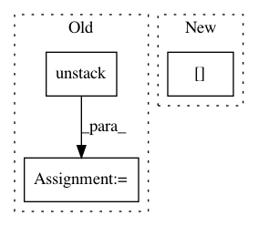

f7b4c6de2037ebedf6bc8ea5979e81666d54534f,research/object_detection/meta_architectures/center_net_meta_arch.py,,convert_strided_predictions_to_normalized_boxes,#,992
Before Change
filter_nonoverlapping=False)
return boxes
box_lists = [box_list.BoxList(boxes) for boxes in tf.unstack(boxes, axis=0)]
true_heights, true_widths, _ = tf.unstack(true_image_shapes, axis=1)
true_heights_list = tf.unstack(true_heights, axis=0)
true_widths_list = tf.unstack(true_widths, axis=0)
After Change
// Note: We use tf ops instead of functions in box_list_ops to make this
// function compatible with dynamic batch size.
boxes = boxes * stride
true_image_shapes = tf.tile(true_image_shapes[:, tf.newaxis, :2], [1, 1, 2])
boxes = boxes / tf.cast(true_image_shapes, tf.float32)
boxes = tf.clip_by_value(boxes, 0.0, 1.0)
return boxes
In pattern: SUPERPATTERN
Frequency: 4
Non-data size: 3
Instances
Project Name: tensorflow/models
Commit Name: f7b4c6de2037ebedf6bc8ea5979e81666d54534f
Time: 2020-12-01
Author: rathodv@google.com
File Name: research/object_detection/meta_architectures/center_net_meta_arch.py
Class Name:
Method Name: convert_strided_predictions_to_normalized_boxes
Project Name: danielegrattarola/keras-gat
Commit Name: 9d56361641a64ff73ac630812ecd4964eedbc7aa
Time: 2017-11-09
Author: daniele.grattarola@gmail.com
File Name: gat/graph_attention_layer.py
Class Name: GraphAttention
Method Name: call
Project Name: tryolabs/luminoth
Commit Name: d52eb0bf3d6df25c70933321a841dac157806479
Time: 2018-03-20
Author: joaquin.alori@gmail.com
File Name: luminoth/models/ssd/ssd_utils.py
Class Name:
Method Name: adjust_bboxes
Project Name: fgnt/nara_wpe
Commit Name: 5cc7ba91f38bf3e67a3dd9b21aa4f7d848a1fb34
Time: 2017-09-06
Author: heymann@nt.upb.de
File Name: nara_wpe/tf_wpe.py
Class Name:
Method Name: wpe